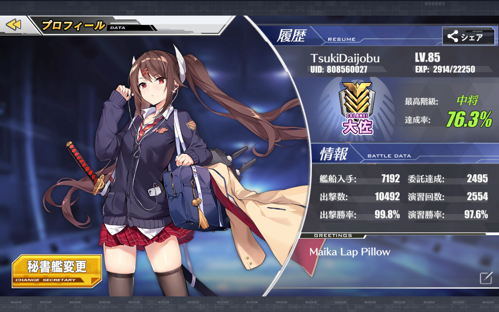
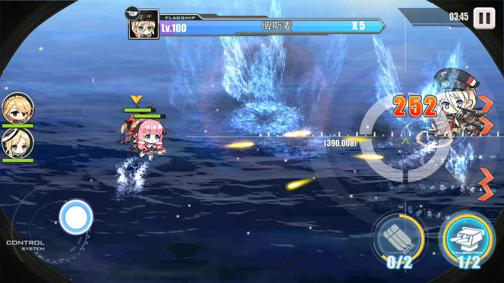
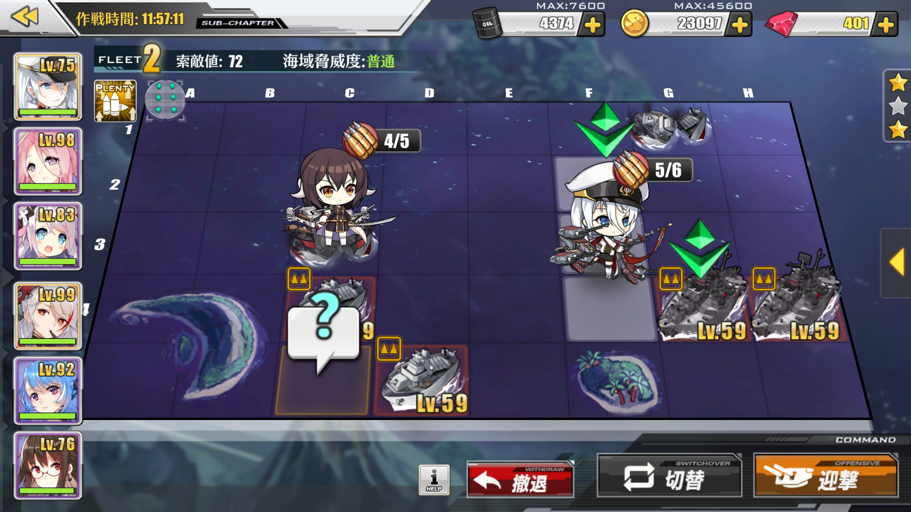
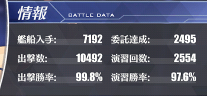

INTRODUCTION
Azur Lane Profile
Hello :) and welcome to my website,My name is Ali Wumpa i'm the person who own this Azur Lane profile with IGN Tsuki Daijobu.I'm create this website just for fun and trying to develop my skill in web development.Also i want to share my azur lane experience to you guys for this website content.
What is Azur Lane ?
First of all,who doesn't know what Azur Lane is,Azur Lane is a side scrolling ship shooter mobile game developed by Chinese Game Developer Manjuu which taking scenarios of battle World War II (based on wikipedia.)
The gameplay is quite simple,you build up your ship's fleet with objective taking down opponent's fleet to clear a map.Usually i call opponent's fleet a node.There are three type node which is normal,treasure,and boss node.
- Normal node : a normal opponent's fleet to unlock boss node in the map with 3 type difficult which is easy,normal,and hard.
- Treasure node : an opponent's fleet with treasure ship which give us an equipment box or coin.
- Boss node : a boss opponent's fleet that unlocked in the map after taking down a few normal node.
| (1)in-node gameplay | (2)exploration node in map |
|  |  |
User Interface Azur Lane

This is main menu display in Azur Lane,as you can see there are many moonrunes of japanese that you probably can't understand.So on this section i will explain to you the functional of these features on main menu:
- Admiral's profile : this is your account status information
 Japanese moonrunes translate are on this table below :
Battle Data Ship's acquired Commisions completed Sortie's attempted (PvE) Excercise's attempted (PvP) Sortie's win percentage (PvE) Excercise's win percentage (PvP) - Gem's Store : place for spend your gem to buy exclusive skin,packaged item(cube,coin,oil,and drill.Whaler usually buy this XD,and other things like wedding ring,expand dockyard and equipment etc.
- Dockyard : this is your ship's place,you can uncap,retrofit,and adjust equipment for your ship in Dockyard.
- Equipment : you can access your weapon for a ship from here.there are 4 different tab in this feature.
- Design : design weapon to create weapon for your ship. (gambar menyusul)
- Destroy : scrap your weapon into coin and plat for upgrading weapon. (gambar menyusul)
- Equipment : list of weapon you get from map or from tech box and you can see detailed information like damage,fire power etc of weapon in here. (gambar menyusul)
- Material : list of material/item like food,techbox,blueprint,upgrade plat,etc. (gambar menyusul)
- Living area : (penjelasan menyusul).
- Research : (penjelasan menyusul).
- Task : (penjelasan menyusul).
- Building : (penjelasan menyusul).
- Fleet/Guild : (penjelasan menyusul).
- Commision tab : (penjelasan menyusul).
- Fleet's ship : (penjelasan menyusul).
- Weigh Anchor : (penjelasan menyusul).
- Ongoing event : (penjelasan menyusul).
usually,i refer all equipment gear,ship list and skill description also maintenance/update notification in azurlane.koumakan site